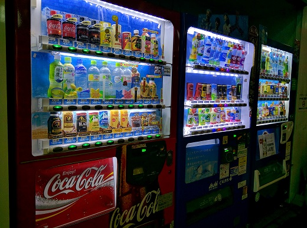
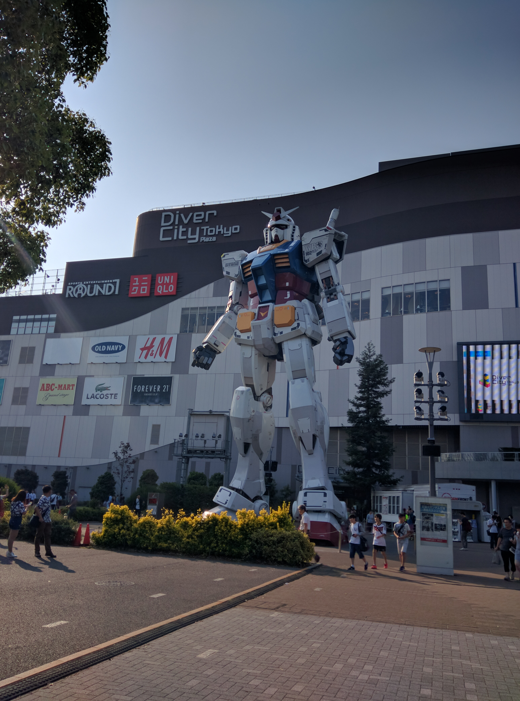
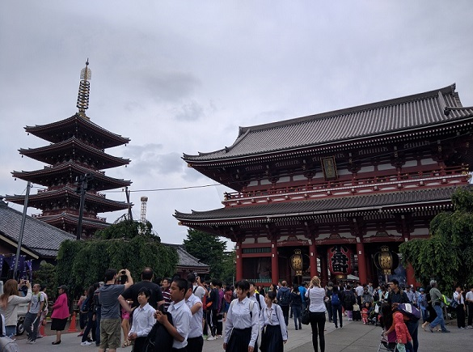
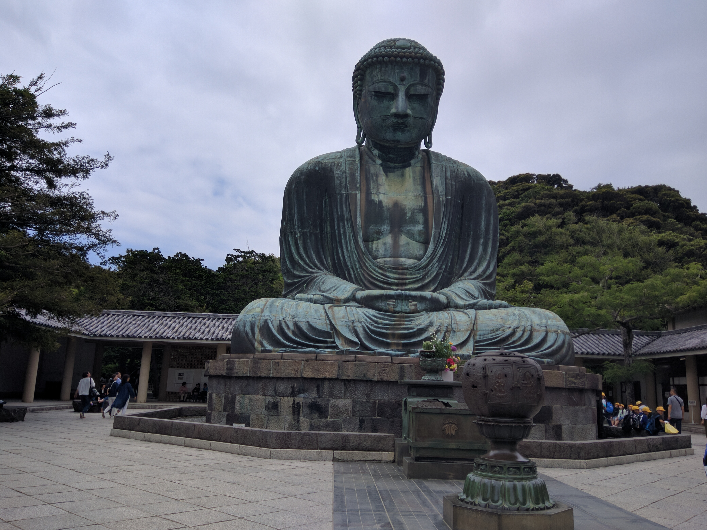
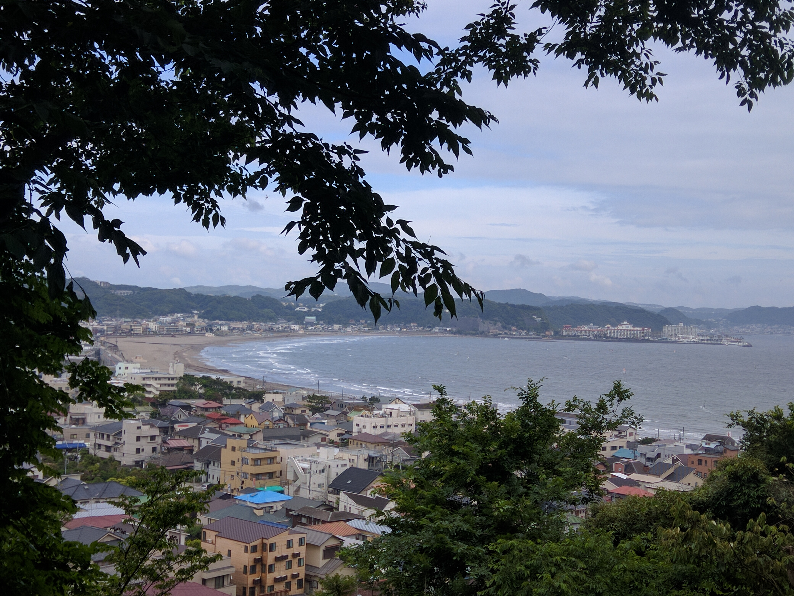

Portfolio
Tokyo - Besuch 2016
Ich hatte immer den Traum nach Japan zu fliegen und im Mai 2016 war es dann endlich soweit. Wir flogen von München direkt nach Tokyo und obwohl es mein erster Flug überhaupt war, war die vorfreude auf Japan größer als irgendwelche Flugängste. Dort angekommen war ich erstmal total überfordert. All die neuen Eindrücke waren einfach Wahnsinn. Im folgenden möchte ich paar Erlebnisse aus Japan mit euch Teilen.
An jeder ecke stehen Getränkeautomaten um seinen Durst zu stillen. Ich persönlich fand sie wirklich super. Man musste nicht wirklich selbst Getränke schleppen da man doch überall etwas zum trinken bekam.
Für mich war klar dass ein Besuch im Pokemoncenter nicht fehlen durfte

Auch nicht ein Besuch bei der rießen Gundam Statue
Folgend noch ein paar Kulturelle Bilder:

